方案A · 新主推真温泉私汤
朵芳阁温泉度假酒店
成都 ⇌ 贵州 · 4天3晚 · 情侣佛系 · 阳台私汤与山谷日落 · 不赶景点的躺平温泉假期
金汤级温泉度假地 ✅实查
套餐 ¥628/晚 工作日价 ⚠️待核实
距贵阳 约1h · 不偏远
总预算 2人 约4800-5600 · 人均约2400-2800
示意
本方案整体氛围参考（示意，非朵芳阁实景）
一 · 为什么是朵芳阁
Site Logic
从「峰林大片」转向「私汤佛系」——为不想赶路、想关起门泡真温泉的情侣而选
① 真温泉私汤，认证可查
贵州省文旅厅「金汤级温泉度假地」认证酒店；客房阳台带室外泡池，直引硫磺温泉，不出房门即可泡汤看山谷。
✅实查
【来源】贵州省文旅厅金汤级温泉度假地名单 / 酒店官方资料【时间】2026-08
② 套餐价能打：¥628/晚
工作日套餐约¥628/晚（4.6折），含双早＋双人温泉票＋农耕体验——温泉本身即最大消费项，套餐直接覆盖。
⚠️待核实
【来源】携程套餐页公开标价【时间】2026-08【说明】工作日价，具体以登录后实时房态为准
③ 距贵阳约1h，不偏远
贵阳北站至酒店约35km、车程约1h；进可顺访贵阳美食，退可全程泡在酒店，中转成本低。
📊估算
【来源】地图测距【时间】2026-08【说明】车程按常规路况估算
④ 佛系4天3晚的节奏刚好
泡汤＋农耕体验＋峡谷散步，全天无硬性景点；写真只落在最合适的傍晚，不刻意不硬靠。
📊估算
【来源】行程编排判断【时间】2026-08
取舍说明：相比万峰林（悦栖里）方案——景观从「峰林大片」降为「峡谷山谷」；酒店精致度携程4.0分，低于悦栖里的4.8分。换来的三样：真温泉私汤 ＋ 更便宜 ＋ 更近贵阳。适合想要「泡汤躺平」而非「追大片」的佛系假期；若更看重景观出片，请回看悦栖里方案。
二 · 路线流程
Route Flow
去程一条线，返程原路镜像——不换乘、不绕路，高铁之后最多1小时即达酒店
成都东
高铁 · 约3h
269-282元/人·程 ✅实查
此处看点：建议早班车出发，午后即达
贵阳北
打车 / 酒店接送 · 约1h · 35km
约150-200元/趟 📊估算
此处看点：顺访市区肠旺面 / 酸汤鱼
朵芳阁温泉酒店
入住 · 私汤园景房
金汤级认证 ✅实查
此处看点：阳台泡池，山谷日落
朵芳阁
返程 · 上午再泡一次私汤
此处看点：泡完汤再出发，不留遗憾
贵阳北
约1h · 35km
约150-200元/趟 📊估算
此处看点：候车间隙再吃一碗肠旺面
成都东
高铁 · 约3h
269-282元/人·程 ✅实查
此处看点：建议午后车次，傍晚抵蓉
返程与去程完全对称，建议一并购买返程车票；备选落点：修文县站（距酒店17.2km / 约39min，若车次合适可省去贵阳北打车段）。
三 · Day 1-4 行程
Itinerary
佛系节奏：每天最多一个外出点，其余时间留给温泉、山谷和彼此
贵阳北
约1h · 35km
看点：顺访肠旺面（可选）
- 上午成都东出发，高铁约3h（建议早班车，午后即达，车上备简餐）。
- 中午抵贵阳北，转打车或酒店付费接送（约1h、35km）；时间充裕可市区顺访金牌罗记肠旺面。
- 下午抵店办理入住，私汤园景大床房（46㎡，江景阳台＋室外泡池）。
- 傍晚阳台上放水泡私汤——硫磺温泉氤氲里看山谷日落，本日不出酒店。
- 夜酒店餐厅晚餐（周边无饭店，三餐以酒店为主）。
阳明文化园
约30min车程
看点：王阳明龙场悟道地
- 上午中国阳明文化园——王阳明龙场悟道之地（约30min车程），古建廊柱间走走，半天足够；门票以景区实时价为准 ⚠️待核实。
- 午后返回酒店，泡公共汤池换换口味，困了就回房午休。
- 傍晚桃源河峡谷散步（酒店位于漂流终点旁；漂流一般至9月下旬停漂，本方案只安排散步，不依赖漂流）。黄昏光线柔和，是全行程最自然的写真时段——边走边拍即可，不做硬性安排。
- 夜酒店餐厅晚餐，饭后阳台私汤收尾。
示意
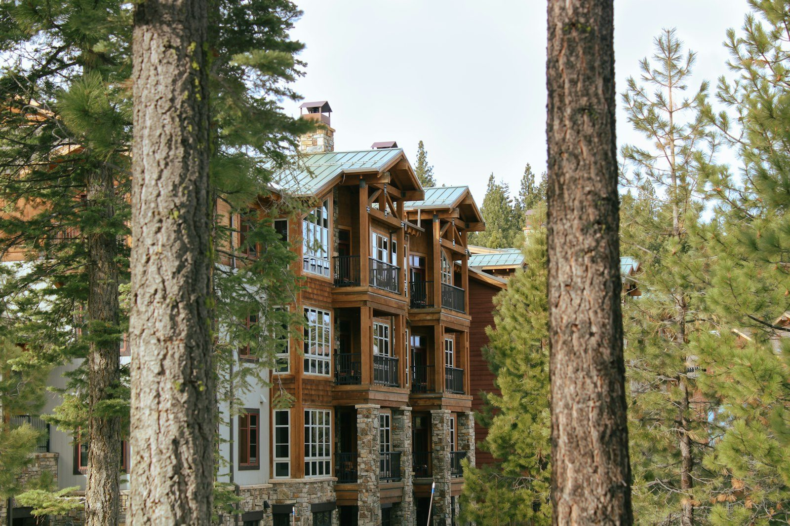
农场 / 林间木屋氛围参考（示意）
- 上午睡到自然醒，慢慢吃早餐（注意：酒店早餐以简餐为主，详见住宿卡差评提示）。
- 午后泡汤——私汤或公共汤池轮换，把温泉泡回本。
- 傍晚农耕体验（套餐含）＋农场漫步，田园场景自然出片，边走边拍即可，不刻意摆拍。
- 夜最后一晚，泡着私汤数星星收尾。
贵阳北
约1h · 35km
看点：候车间隙再吃一碗
- 上午再泡一次私汤收尾，慢慢收拾行李，前台退房。
- 中午前后打车或酒店接送至贵阳北（约1h），预留充裕时间。
- 下午高铁返回成都（约3h），傍晚抵蓉。
四 · 交通明细
Transport
两条腿：高铁主干（实查票价）＋ 末段35km接驳（打车或酒店付费接送）
| 区间 | 方式 | 时长 | 距离 | 费用 | 溯源 |
|---|
| 成都东 → 贵阳北 |
高铁 |
约3h |
— |
269-282元/人·程
2人往返约1076-1128 |
✅实查 【来源】12306参考票价【时间】2026-08 |
| 贵阳北 → 朵芳阁 |
打车 / 酒店付费接送 |
约1h |
约35km |
约150-200元/趟 |
📊估算 【来源】常规网约车里程价推算【时间】2026-08 |
| 备选：修文县站 |
高铁落点备选 |
约39min车程至酒店 |
17.2km |
视车次而定 |
📊估算 【来源】地图测距【时间】2026-08 |
酒店有付费接送服务，预订时可一并咨询；高铁票价随车次浮动，出行前以12306实时价为准。
五 · 住宿卡 · 朵芳阁温泉度假酒店
Stay
真温泉私汤房＋金汤级认证；精致度中等，胜在「房里有温泉」这件事本身
示意
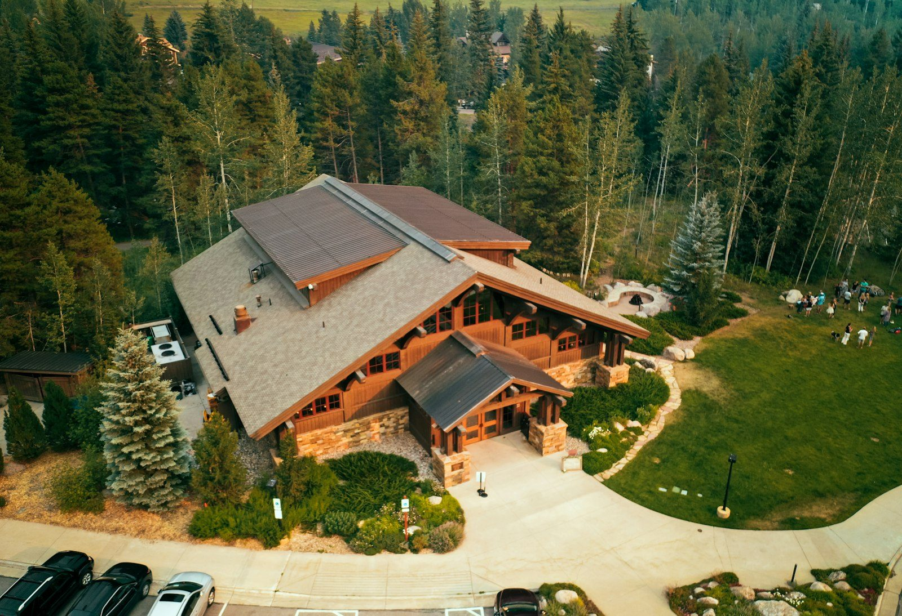
山林温泉度假氛围参考（示意，非酒店实景）
朵芳阁温泉度假酒店
金汤级温泉度假地 · 贵州省文旅厅认证
携程评分 4.0 分 / 442条点评 ✅实查
【来源】携程酒店详情页匿名直读【时间】2026-08
推荐房型：私汤园景大床房 · 46㎡ · 江景阳台＋室外泡池（硫磺温泉）
套餐：¥628/晚 工作日价（约4.6折）· 含双早＋双人温泉票＋农耕体验
⚠️待核实
【来源】携程套餐页公开标价【时间】2026-08【说明】工作日价，周末/节假日浮动，以登录后实时房态为准
差评要点（前排点评摘录） ✅实查
① 早餐简陋——多为面条、土豆粉、煮鸡蛋一类简餐，与¥600＋房价的期待有落差，建议自带咖啡或点心。
② 周边无饭店——酒店位置独立，吃饭依赖酒店餐厅，出发前了解菜单并备零食。
【来源】携程前排差评原文摘录【时间】2026-08
OTA核实提醒
携程日历房价「登录看低价」，套餐是否持续在售、是否含上述项目，均以出行前登录携程实时页面为准。
评分、点评数、分项得分取自2026-08携程公开详情页，出行前建议再看一眼最新差评走向（尤其服务3.8分一项）。
六 · 预算表（2人 · 4天3晚 · 推荐档）
Budget
每一项都带溯源标签；房价类项目到店前请二次核实
| 项目 | 明细 | 金额（2人） | 溯源 |
|---|
| 大交通 |
高铁269-282元/人·程 × 4程＝1076-1128；接送约150-200/趟 × 2趟＝300-400 |
约1380-1530 |
✅实查📊估算 票价实查；接送估算 |
| 住宿 |
私汤园景大床房 ¥628/晚 × 3晚 |
约1884 |
⚠️待核实 套餐工作日价口径 |
| 餐饮 |
3天 × 2人；周边无饭店，以酒店餐厅为主，中转顺访贵阳美食 |
600-780 |
📊估算 |
| 当地交通 |
阳明文化园往返、峡谷短途等 |
300-500 |
📊估算 |
| 门票娱乐 |
温泉票已含套餐；阳明文化园门票待核实；农耕体验套餐含 |
200-400 |
⚠️待核实📊估算 |
| 分项小计 |
以上五项合计 |
4364-5094 |
复算 |
| 应急金 |
约10%缓冲（房价浮动、临时加菜、退改等） |
约480-560 |
📊估算 |
| 总预算（2人） |
分项小计＋应急金，取整为预算档 |
约4800-5600 |
📊估算 |
| 人均 |
总预算 ÷ 2 |
约2400-2800 |
📊估算 |
口径说明：分项小计4364-5094＋应急480-560＝4844-5654，按档位取整为4800-5600，出入落在应急缓冲带内；房价以携程登录后实时价为准，若套餐涨价，应急金可吸收约10%波动。
七 · 利弊清单
Pros & Cons
亮点
- 真温泉私汤：金汤级温泉度假地认证，客房阳台室外泡池直引硫磺温泉 ✅实查
- 套餐便宜：¥628/晚含双早＋双人温泉票＋农耕体验（工作日价）⚠️待核实
- 近：距贵阳约1h（35km），高铁后最多1小时即达 📊估算
- 桃源河漂流终点旁：峡谷散步出门即达（漂流停漂不影响散步）
- 农耕体验：套餐含，农场氛围适合两个人慢下来
坑点
- 早餐简陋：面条、土豆粉、煮鸡蛋为主，自带点心补足 ✅实查
- 周边无饭店：三餐依赖酒店餐厅，提前看菜单备零食 ✅实查
- 服务3.8分：分项中最弱一环，预期放低、体验更稳 ✅实查
- 9月下旬漂流停漂：本方案不依赖漂流，仅安排峡谷散步
- 精确房价需登录核实：携程日历房价登录可见，出行前二次确认 ⚠️待核实
八 · 美食安排
Food
周边无饭店 → 酒店餐厅为主，贵阳中转顺访两顿地道味
主基调：酒店餐厅
朵芳阁周边无饭店，三餐以酒店餐厅为主。出发前先看菜单并自备零食/咖啡；酒店早餐为简餐（面条、土豆粉、煮鸡蛋），可自带点心补足。
Day1 晚 / Day2 晚 / Day3 晚 均在酒店餐厅；Day2 午餐回酒店解决，Day3 全天不出门。
贵阳中转顺访（Day1午 / Day4午）
顺访需多花1-1.5h，佛系心情优先——想吃就绕，不想吃就直奔酒店。
示意
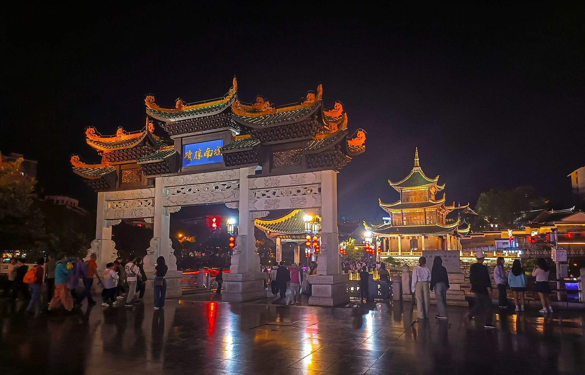
贵阳中转美食氛围参考（示意）
九 · 拍照点
Photo Spots
四个高光机位，全部顺路、零摆拍压力
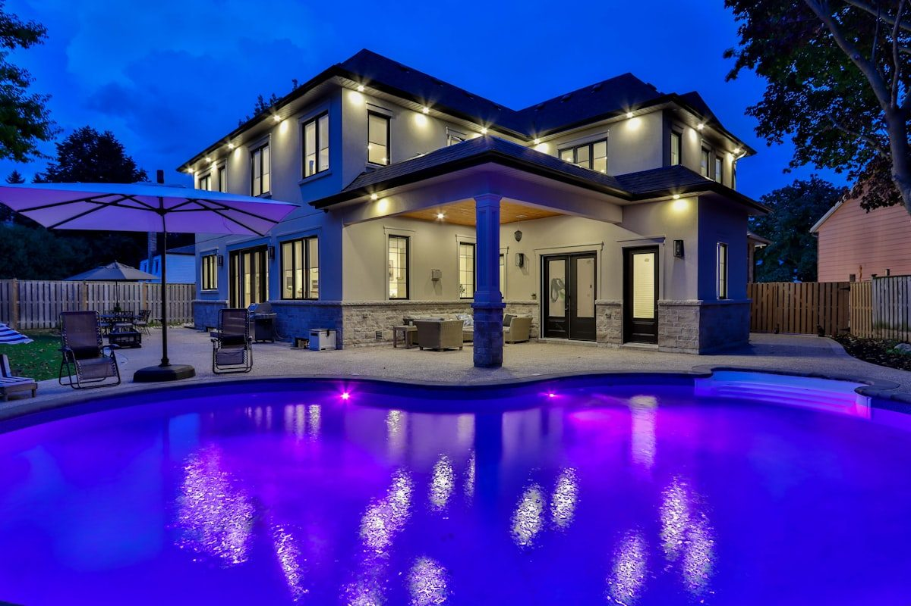
温泉山谷晨雾 / 蒸汽氤氲，清晨与傍晚最佳；温泉为示意参考图。
阳台私汤黄昏Day1/Day4 日落前1小时，逆光剪影＋蒸汽，全行程最私密机位。
农场与农耕体验Day3 白天，田园系自然出片；林间木屋氛围见Day3插图。
阳明文化园Day2 上午，古建廊柱＋竹林，汉服/素色穿搭皆宜。
桃源河峡谷傍晚Day2 黄昏光线柔和，全行程最自然的写真时段——边走边拍，不硬靠。
十 · 溯源标签说明
Traceability
✅实查官方 / 平台渠道直接核验（省文旅厅认证、携程评分与点评、12306参考票价、点评类美食价）
📊估算基于实查数据的区间推算（接送价、当地消费、车程）
⚠️待核实需登录OTA或到店确认（房价、套餐内容、景区门票）
数据核验时间：2026-08（酒店评分/点评/认证、高铁票价、贵阳美食价格）。房价套餐与景区门票以出行前登录携程、12306实时页面为准。文中照片均为氛围示意，标注「示意」者非朵芳阁/贵阳实景，不冒充实拍。
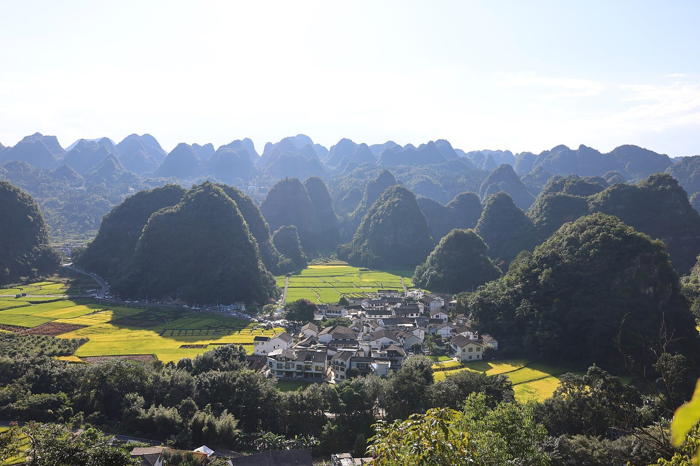
兴义万峰林 · 峰林田园度假 + 写真首选方案
徐霞客：「唯有此处峰成林」—— 中国最美五大峰林之一 ｜ 海拔约 1100m · 年均 16℃ · 负氧离子高 ｜ 9 月下旬梯田金黄，摄影最佳季
A1
核心选址逻辑
Why Wanfenglin
为何是万峰林
- 酒店即目的地：峰林 + 金色稻田 + 马岭河峡峰，是情侣写真最佳背景，恰好命中「好酒店 + 周边自然风光 + 拍写真」三个关键词。✅实查 维基5A
- 气候宜人：海拔约 1100m、年均 16℃，9 月下旬避暑尾季，正午紫外强需防晒。✅实查
为何连住 3 晚同一家
- 免搬运行李，度假酒店连住常享优惠/升房；
- 同一个最佳机位可在多个时段复用（日出、黄昏、夜景），出片更从容。
- 位置略偏远是代价：往返均需盘兴高铁 + 接送，首末各约半天在途，不宜再串游其他地区。
A2
全程路线总览
Route Map
成都东
Day1 上午
高铁 · 约 3h
此处看点沿途黔地山水掠过车窗
→
贵阳北
Day1 中午
站内换乘 · 约 40min
此处看点中转停留（回程可顺访贵阳美食）
→
兴义南
Day1 下午
盘兴高铁 · 约 2h
此处看点黔西南喀斯特峰丛渐近
→
万峰林酒店
Day1 傍晚前
打车/接送 · 20-30min
此处看点开窗即峰林 · 露台看日落
万峰林酒店
Day4 上午
慢早餐 · 晨景散步
此处看点稻田 + 晨雾，补几张收尾
→
兴义南
Day4 中午
打车 · 25min
此处看点—
→
→
成都东
Day4 傍晚
高铁 · 约 3h
此处看点当晚到家休息
A3
每日行程 · 佛系节奏
Itinerary
节奏基调：每天 9-10 点自然醒、10:30 后出门、每天 2 个点封顶、午后回酒店休息、第 3 天留白为「纯酒店日」。9 月贵州多雨，酒店自有空间（泳池/书吧/庭院）亦是度假内容。以下车程已按山区路况上浮约 1.2 倍估算。📊估算
Day 1 · 成都 → 万峰林（半天在路上）
打卡点 1 个 ｜ 达标
→
→
→
酒店入住
傍晚前
打车/接送 · 20-30min
此处看点露台看峰林日落 · 周边散步
- 上午：成都东高铁 → 贵阳北（约 3h 内）→ 转盘兴高铁至兴义南（约 2h）。盘兴高铁让首日通勤压至约半天，保留度假时间。📊估算 单一来源
- 下午：兴义南打车/接送至万峰林酒店入住（20-30 分钟）。
- 傍晚：酒店露台/庭院看峰林日落，周边散散步，就地晚餐（兴义羊肉粉 / 刷把头 / 五色糯米饭，人均约 30-50 元）。📊估算
Day 2 · 万峰林景区 + 马岭河峡谷
打卡点 2 个 ｜ 达标
酒店
10:30 出发
打车 · 约 15min
此处看点—
→
万峰林景区
10:45 起 · 约 2.5h
门票+观光车 约150-200/人
此处看点八卦田 · 观峰道 · 金色稻田
→
回酒店午休
13:00 回程
打车 · 约 15min
此处看点避开正午暴晒 · 体感舒适
→
马岭河峡谷
16:00 出发 · 25min
距酒店约 11km · 门票约 70-80
此处看点地缝飞瀑「地球上最美丽的伤疤」
→
回酒店 · 黄昏
18:00 后
打车 · 25min
此处看点露台黄昏光线柔和，适合留几张合影
- 上午 10:30：万峰林景区（八卦田 / 观峰道 / 稻田）。门票口径：按门票+观光车约 150-200 元/人留预算，勿按 70-80 低估。⚠️待核实
- 午后 13:00：回酒店午休（16℃ 体感舒适，但紫外线强，正午适合回房）。
- 傍晚 16:00：马岭河峡谷——地缝飞瀑「地球上最美丽的伤疤」，距酒店约 11km / 25 分钟，门票约 70-80。📊估算
- 晚间：回酒店，露台黄昏光线正好——想拍写真的话这是全天最柔的光线，背景也干净；晚餐农家菜 / 酸汤鱼。
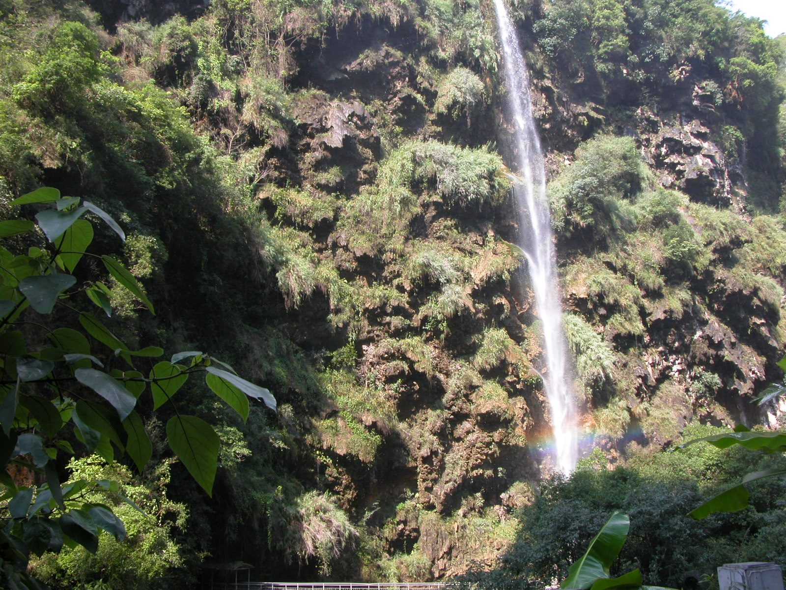
马岭河峡谷 · 地缝飞瀑（Unsplash 示意配图）
Day 3 · 纯酒店日（留白）+ 可选半天探索
打卡点 0-1 个 ｜ 达标
酒店自然醒
上午
早午餐 · 庭院/泳池/书吧
此处看点慢时光 · 雨天也不闷
→
可选探索 1 处
下午 · 二选一
乡愁集市步行30min 或 贵州醇/刘氏庄园车约6km/10min
此处看点集市烟火 / 庄园旧时光
→
回酒店 · 黄昏
傍晚
哪里都不用赶
此处看点阳台看峰林暮色 · 天气好时景色通透
- 上午：睡到自然醒，酒店早午餐，庭院 / 泳池 / 书吧慢时光。
- 下午（可选）：乡愁集市（步行约 30 分钟）或贵州醇 / 刘氏庄园（车程约 6km / 10 分钟）；也可以哪儿都不去，就留在酒店——泳池、庭院随手都能补一组写真（完全可选，想拍就拍，不想拍就纯休息）。
- 傍晚：天气好就在酒店阳台看峰林暮色。
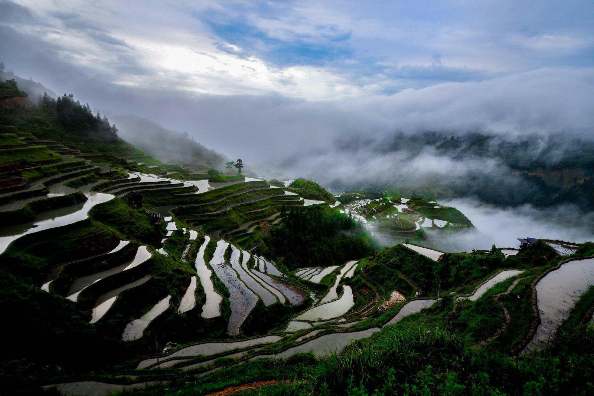
贵州梯田田园（Unsplash 示意配图）
Day 4 · 上午收尾 → 返程
打卡点 1 个 ｜ 达标
酒店慢早餐
上午
晨景散步
此处看点稻田 + 晨雾，随手留几张收尾
→
兴义南 → 贵阳北 → 成都东
中午出发
高铁 · 合计约 5h
此处看点当天傍晚抵成都
- 上午：酒店慢早餐，周边晨景散步（稻田 + 晨雾），慢慢收尾。
- 中午：兴义南 → 贵阳北 → 成都东高铁返程，当天傍晚抵成都。
A4
交通串联
Transport
| 路段 | 方式 | 数据 | 溯源 |
|---|
| 成都东 → 贵阳北/贵阳东 | 高铁二等座 | 约 2.5-3.5h，269-282 元/人·程 | ✅实查维基·成贵专线（官方定价） |
| 贵阳北 → 兴义南 | 盘兴高铁（G5395 等） | 约 2h，二等座约 174 元起（最低 167） | 📊估算单一来源（贵阳本地宝 2025-11-27 + 携程）；12306 行前实查 |
| 兴义南 → 万峰林酒店 | 打车/酒店接送 | 约 20-30 分钟 | 📊估算 |
| 返程：兴义南 → 贵阳北 → 成都东 | 高铁反向 | 与去程对称 | ✅实查 / ⚠️待核实 |
12306 票价查询截图（成都 → 贵阳）
截图日期 2026-08-15 ｜ 查询日期 2026-08-20。该查询仅作票价基准参考：出行日期为 9.21 后，请以实际出行日期重新查询。
9 月下旬为国庆前小旺季：高铁票建议提前 15 天（预售期）在 12306 抢票；盘兴高铁票价以 12306 实时查询为准。
贵阳中转：去程站内换乘；回程若时间宽裕，可出站顺访肠旺面/酸汤鱼（见美食章节）
A5
住宿推荐 · 万峰林 3 家实查
Hotels
悦栖里·山及民宿上纳灰店
携程 4.8 分Trip 9.7评论 719 条差评仅 2 条
特色：半山泡池 + 无边泳池 + 落地窗直面峰林；2025 年装修；服务分 4.9；携程精品民宿榜 No.2。
US$109/晚起 · 3 晚约 $345（2026-08-15 挂牌价）
出行前请于携程/Trip 核实实时可订价：9 月下旬有无房、连住 3 晚有无优惠/升房、是否含早、有无旅拍套餐。
温泉体验备选
万峰林·十伍 EverHill 温泉度假2026 新开
Trip 9.7评论 57 条小样本 · 新店体验风险
特色：无边际泳池 + 私汤温泉，山景榻榻米房；适合想加「温泉」体验的情侣。
US$166/晚 · 3 晚 $528（2026-08-15 挂牌价）
评论样本少（57 条），订前重点看近期差评；出行前 OTA 核实实时价与房态。
四星性价比
峰林悦山酒店观光台
Trip 9.1评论 1058 条大样本 · 风险低
特色：落日景观、家庭友好；携程万峰林四星榜 No.1；预算更省之选。
US$46-82/晚（2026-08-15 挂牌价）
大样本低风险；出行前 OTA 核实实时价与房态。
A6
美食安排
Food
贵阳（中转停留城市）· 已实查店
金牌罗记肠旺面 —— 贵阳头牌小吃，云岩区民生路，单碗 15-25 元，本地人称「早餐标配」。
✅实查 头条热点解读 2026-07配图为米粉汤类示意，非实店图
示意
蒋家肠旺面 —— 云岩区环城北路 60 号（另民生路好吃街 61 号铺），人气火爆「店内店外坐满」。
✅实查 贵阳网 2023-07-07另：罗记肠旺面·湖南面（黔灵东路店）24 小时营业
老凯俚酸汤鱼（省府路店） —— 云岩区省府路石板街 12 号，22 年老店、非遗酸汤、连续十年上榜必吃榜，人均约 60-110 元。
✅实查 新浪财经头条 2026-08配图为酸汤火锅类示意，非实店图
丝娃娃 —— 花果园区域人均约 20 元（具体店待核）。
⚠️待核实贵州小吃配图均为 Unsplash 品类示意（无贵州菜品原图）
兴义·万峰林（主推住宿地）· 品类建议
兴义羊肉粉（本地招牌早餐）、刷把头、五色糯米饭、布依族八大碗——酒店周边农家菜人均约 30-50 元。📊估算
具体店名出行前大众点评搜「万峰林 农家菜」，按评分 4.5 分以上甄选。⚠️待核实
每日餐饮安排（方案A）
| 天 | 早餐 | 午餐 | 晚餐 |
|---|
| Day1 抵兴义 | 成都出发前自备/高铁餐 | 兴义南站 → 酒店途中简餐 | 酒店露台晚餐：兴义羊肉粉/农家菜（人均 30-50） |
| Day2 景区日 | 酒店含早 | 万峰林景区附近农家菜（蛋炒饭+野菜） | 马岭河回程晚餐：酸汤鱼/布依八大碗 |
| Day3 纯酒店日 | 酒店早午餐 | 酒店或乡愁集市小吃 | 酒店晚餐/兴义市区老凯俚类非遗酸汤 |
| Day4 返程 | 酒店慢早餐 | 高铁餐 | 到家 |
若选方案B（西江）：Day1 晚长桌宴（68/人）、Day2 苗寨火锅（50/人）、酸汤鱼穿插。贵阳店可在去程/返程中转停留时顺访。
A7
分项预算（2 人 · 4 天 3 晚 · 推荐档）
Budget
| 项目 | 金额（2 人） | 口径说明 |
|---|
| 大交通：成都-贵阳往返（269-282×4）+ 贵阳-兴义盘兴高铁（174×4） | 约 1772-1824 元 | 成都段 ✅实查 269-282/人·程；盘兴 📊估算；已按 2 人往返计 |
| 住宿：万峰林推荐档 3 晚 | 约 1200-2400 元 | 📊估算；⚠️待核实 OTA 实时核实 |
| 餐饮（3 天，推荐档 80-120/人·天） | 约 480-720 元 | 贵阳店 ✅实查；兴义单品 📊估算 |
| 当地交通（兴义南接送 + 马岭河/周边短途打车） | 约 800-1600 元 | 📊估算（单点连住，比多地串游更省） |
| 门票（万峰林门票+观光车 + 马岭河） | 约 500-800 元 | 万峰林按 150-200/人 ⚠️待核实；马岭河 70-80 📊估算 |
| 推荐档总预算 | 约 5200-8100 元 | 人均约 2600-4050 元（含 10% 应急金，建议按 700 预留） |
若追求极致体验：住宿升级高档档（无边泳池/半山温泉民宿 1500-3000/晚），2 人总预算可达 1.2 万-2.2 万。⚠️待核实
A8
利弊清单
Pros / Cons
亮点
- 「自然风光 + 写真」维度全贵州最贴合：峰林 + 金色稻田 + 马岭河峡谷，出片率高。
- 酒店即目的地：连住 3 晚深度度假，露台/泳池/庭院自带出片位，雨天也有度假内容。
- 气候宜人：海拔 1100m / 16℃ 避暑，9 月下旬梯田金黄，摄影最佳季。✅实查
- 节奏最佛系：每天 1-2 点，第 3 天纯留白。
坑点
- 位置偏远：往返需盘兴高铁 + 接送，首末各约半天在途（可行，但不宜四地串游）。
- 酒店价格需 OTA 实时核实，勿照搬网上旧文房价。⚠️待核实
- 9 月下旬国庆前为旺季：房源紧俏、高铁票需提前抢；贵州多雨需带伞。
适合人群：追求「峰林田园景观 + 深度连住度假」的情侣；预算不限，愿意接受偏远位置换取美景与清静；对拍照出片有刚需。
A9
拍照点建议（万峰林）
Photo Spots
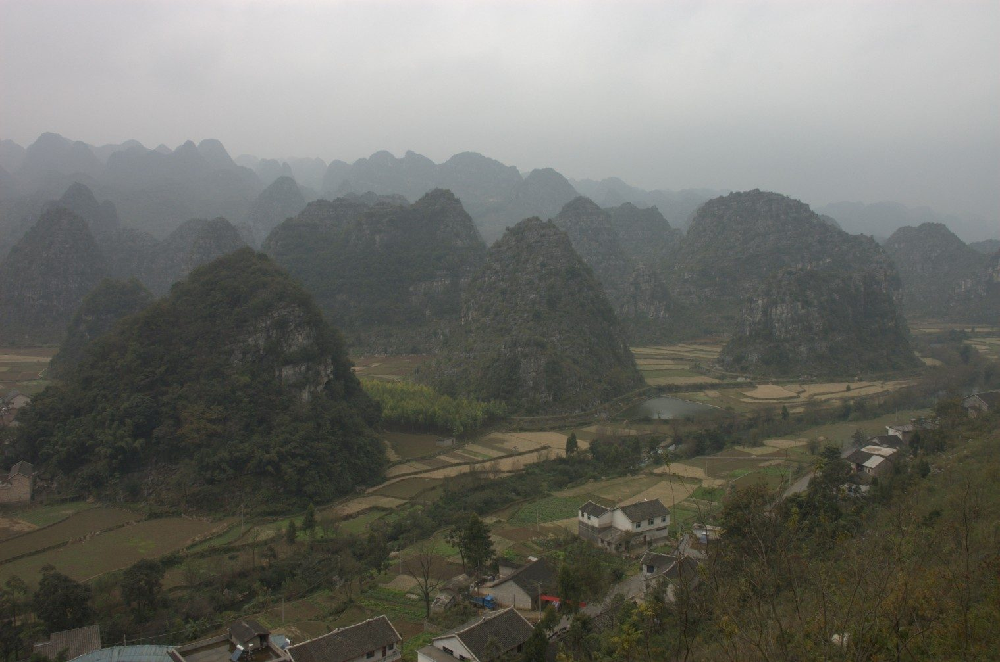
1. 酒店私属露台/无边泳池/庭院
日落黄金一小时，人少背景纯净，最推荐的机位。
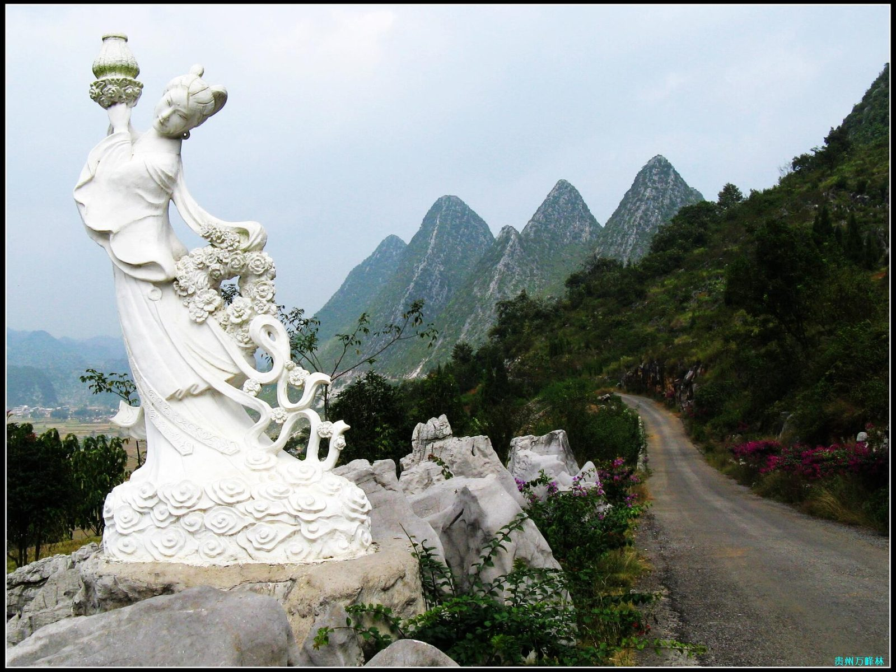
2. 八卦田 / 观峰道
峰林 + 稻田，日落光线绝佳。
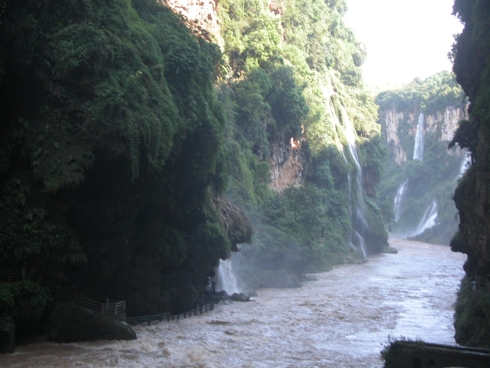
3. 马岭河峡谷
飞瀑 + 地缝，气势大片。
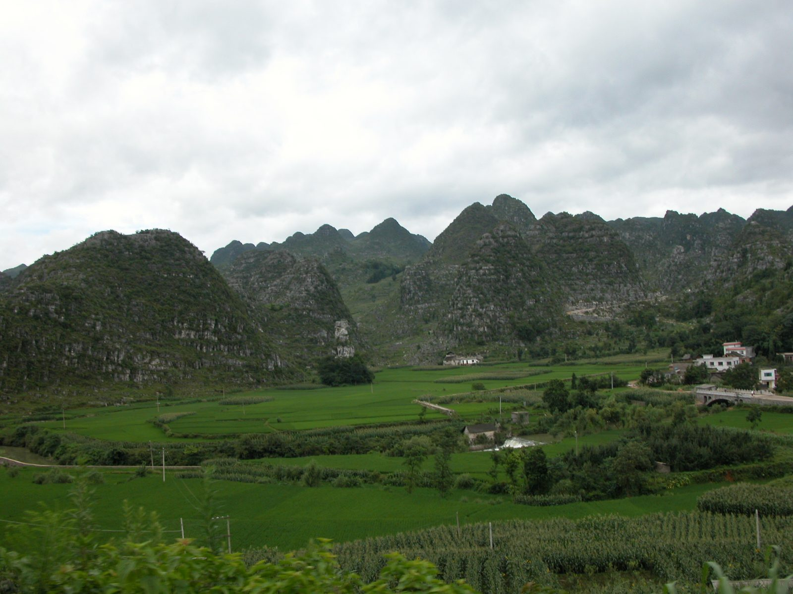
万峰湖/吉隆堡（不建议安排）
水上城堡虽浪漫，但距酒店约 79km / 车程 2.25h，远超 1.5h 探索上限——佛系不赶点。
机位优先级：先酒店后近旁；黄金一小时（日出后 1h / 日落前 1h）；备 2 套服装（素色自然风 + 民族氛围风）；优先选自带旅拍套餐的酒店。